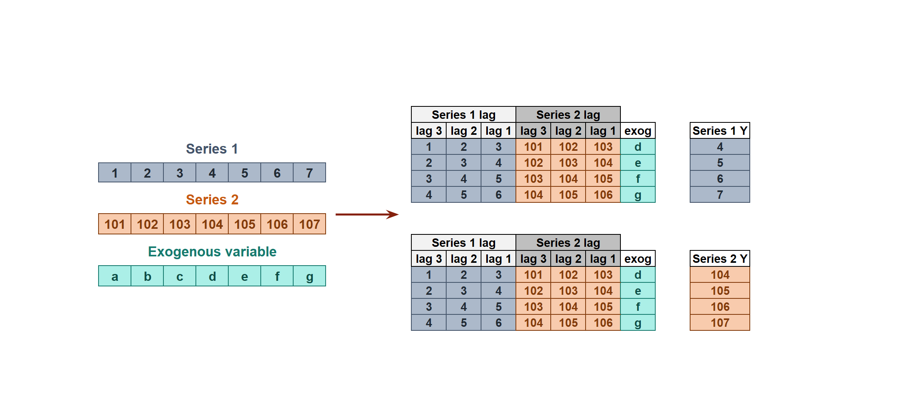
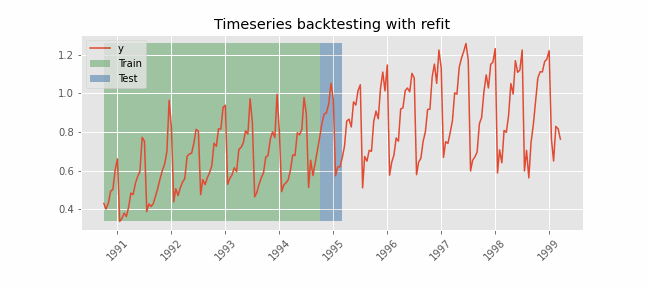
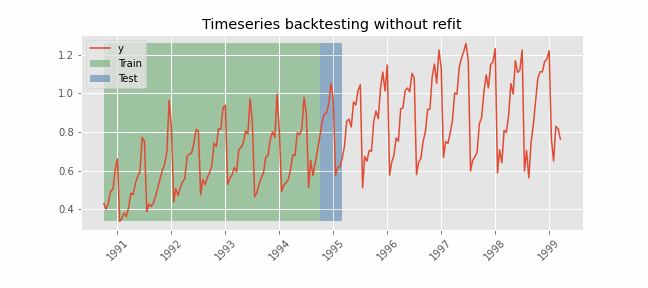

Introduction to forecasting¶
Time series and forecasting¶
A time series is a sequence of data arranged chronologically, in principle, equally spaced in time. Forecasting is the process of predicting future values of a time series based on its previously observed patterns (autoregressive), or including external variables.

Machine learning for forecasting¶
In order to apply machine learning models to forecasting problems, the time series has to be transformed into a matrix in which each value is related to the time window (lags) that precedes it. In a time series context, a lag with respect to a time step t is defined as the values of the series at previous time steps. For example, lag 1 is the value at time step t−1 and lag m is the value at time step t−m.

This type of transformation also allows to include additional variables.

Once data have been rearranged into the new shape, any regression model can be trained to predict the next value (step) of the series. During model training, every row is considered a separate data instance, where values at lags 1, 2, ... p are considered predictors for the target quantity of the time series at time step p+1.

Single-step forecasting¶
Single-step prediction is used when the goal is to predict only the next value of the series.

Multi-step forecasting¶
When working with time series, it is seldom needed to predict only the next element in the series (t+1). Instead, the most common goal is to predict a whole future interval (t+1, ..., t+n) or a far point in time (t+n). Several strategies allow generating this type of prediction.
Recursive multi-step forecasting¶
Since the value t(n-1) is required to predict t(n), and t(n-1) is unknown, a recursive process is applied in which, each new prediction, is based on the previous one. This process is known as recursive forecasting or recursive multi-step forecasting and can be easily generated with the ForecasterAutoreg and ForecasterAutoregCustom classes.

Direct multi-step forecasting¶
Direct multi-step forecasting consists of training a different model for each step of the forecast horizon. For example, to predict the next 5 values of a time series, 5 different models are trained, one for each step. As a result, the predictions are independent of each other. This entire process is automated in the ForecasterAutoregDirect class.

Multiple output forecasting¶
Some machine learning models, such as long short-term memory (LSTM) neural network, can predict simultaneously several values of a sequence (one-shot). This strategy is not currently implemented in skforecast library.
Multi-time series forecasting¶
In univariate time series forecasting, a single time series is modeled as a linear or nonlinear combination of its lags. That is, the past values of the series are used to forecast its future. In multi-time series forecasting, two or more time series are modeled together using a single model. Two strategies can be distinguished:
No multivariate time series¶
A single model is trained, but each time series remains independent of the others. In other words, the past values of one series are not used as predictors of other series. Why is it useful then to model everything together? Although the series do not depend on each other, they may follow the same intrinsic pattern regarding their past and future values. For example, in the same store, the sales of products A and B may not be related, but they follow the same dynamics, that of the store.

In order to predict the next n steps, the recursive multi-step forecasting is applied as in univariate forecasting. The only difference is that, the series name for which to estimate the predictions, needs to be indicated.

Multivariate time series¶
All series are modeled in a single model considering that each time series depends not only on its past values but also on the past values of the other series. The forecaster is expected not only to learn the information of each series separately but also to relate them. For example, the measurements made by all the sensors (flow, temperature, pressure...) installed on an industrial machine such as a compressor.

Backtesting forecasting models¶
Backtesting is a term used in modeling to refer to testing a predictive model on historical data. Backtesting involves moving backward in time, step-by-step, in as many stages as is necessary. Therefore, it is a special type of cross-validation applied to previous period(s).
Backtesting with refit and increasing training size (fixed origin)¶
The model is trained each time before making predictions. With this configuration, the model uses all the data available so far. It is a variation of the standard cross-validation but, instead of making a random distribution of the observations, the training set increases sequentially, maintaining the temporal order of the data.


Backtesting with refit and fixed training size (rolling origin)¶
A technique similar to the previous one but, in this case, the forecast origin rolls forward, therefore, the size of training remains constant. This is also known as time series cross-validation or walk-forward validation.


Backtesting without refit¶
After an initial train, the model is used sequentially without updating it and following the temporal order of the data. This strategy has the advantage of being much faster since the model is trained only once. However, the model does not incorporate the latest information available, so it may lose predictive capacity over time.

